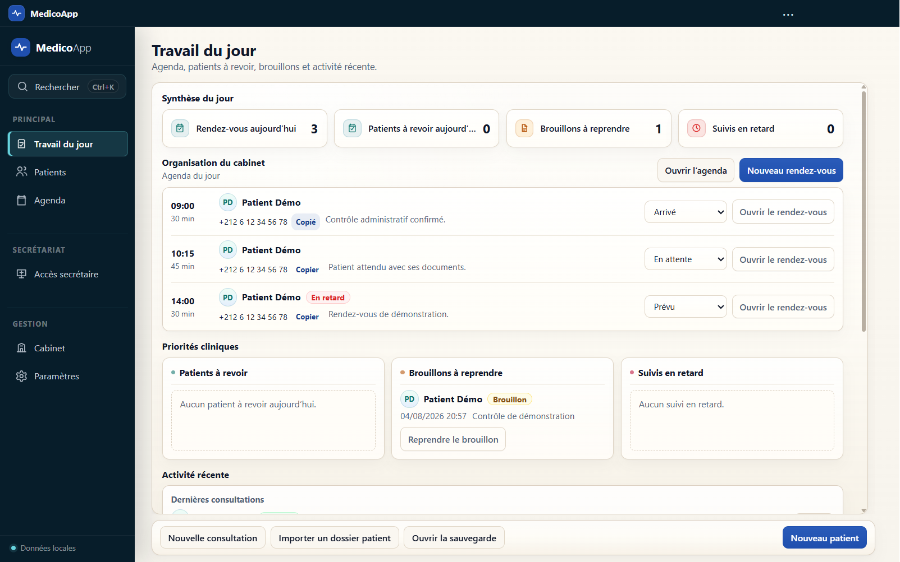
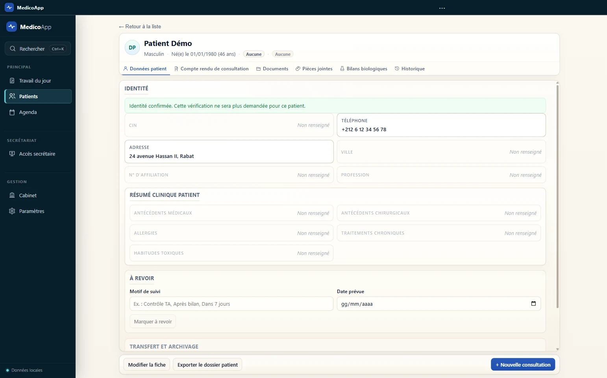
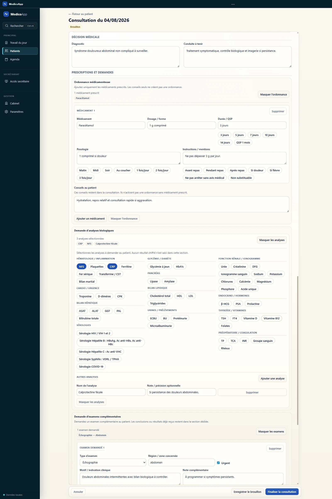
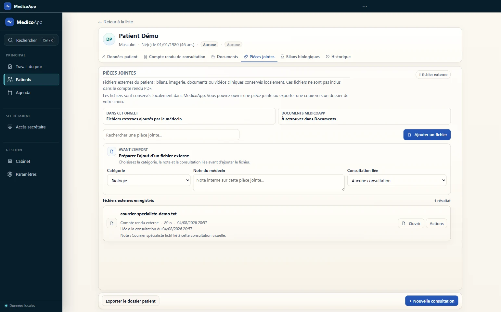
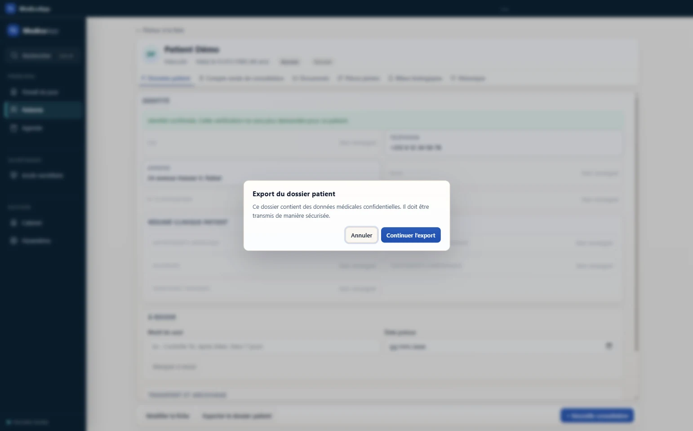
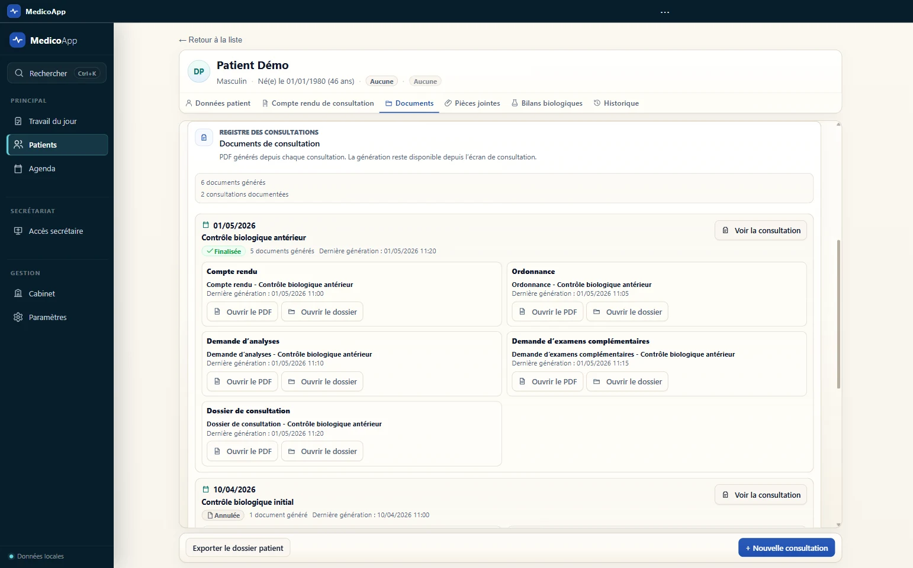
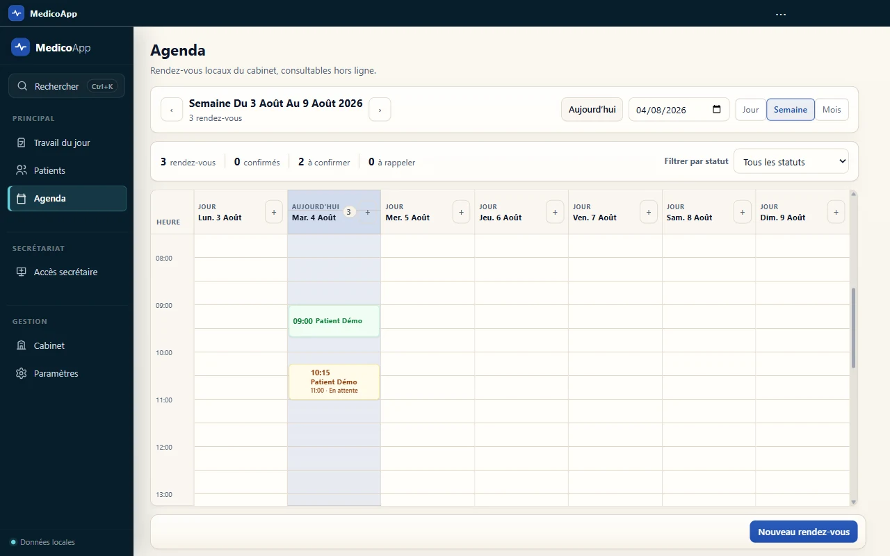
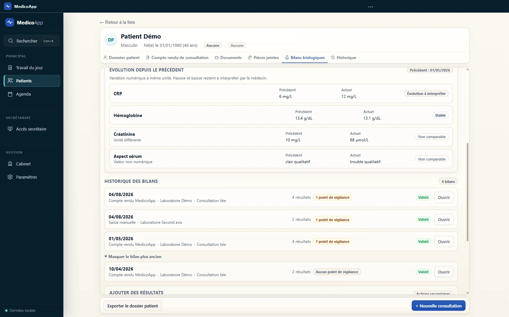
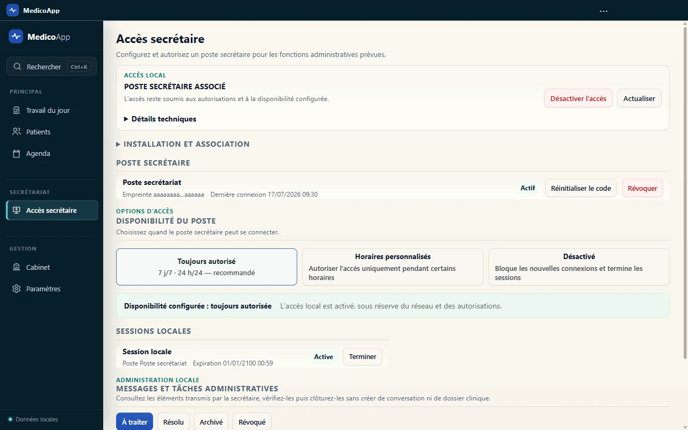

Espace médecinMedicoApp
Logiciel Windows pour cabinets médicaux
Votre cabinet.Votre rythme.Vos données.
Dossier patient, consultation, documents, pièces jointes, agenda et secrétariat local dans une interface claire, conçue pour le travail quotidien du cabinet.
Applications officielles sur Microsoft Store
Espace secrétariatMedicoSecrétaire

Données localesLe cabinet garde le contrôle
Explorer le produit ↓
Captures réelles de l’application · Données de démonstration
Le produit
Votre journée.Un seul fil.
MedicoApp relie les moments qui se succèdent réellement : préparer la journée, retrouver un patient, documenter la consultation, gérer les fichiers et produire les documents.
Commencer sans chercher
Le travail du jour remet l’essentiel au premier plan.
Rendez-vous, patients à revoir, brouillons et activité récente sont rassemblés dans un espace opérationnel distinct de la liste complète des patients.






Fonctions fortes
Moins d’écrans.Plus de continuité.
Dossier patient
Le contexte reste proche de l’action.
Les informations importantes restent organisées sans transformer chaque écran en tableau de bord.
Pièces jointes
Les fichiers externes ont enfin leur place.
Catégorisation, note du médecin, consultation liée, recherche et export d’une copie.
Transfert patient
Le dossier complet peut passer d’un médecin à l’autre.
Export puis import sur une autre installation MedicoApp, avec avertissement explicite avant transmission.
Bilans biologiques
Structurés. Comparables. Jamais interprétés à votre place.
Historique et comparaison déterministe sans diagnostic automatisé.

Documents
Chaque document reste facile à produire et à retrouver.
Documents générés, fichiers externes et éléments administratifs gardent des emplacements distincts.
Données locales
Les dossiers restentau cabinet.
MedicoApp est une application Windows locale. Les dossiers patients restent sur le poste du médecin et dans les sauvegardes qu’il contrôle. L’éditeur n’accède pas à distance au contenu clinique.
Base clinique locale
Le poste du médecin reste l’autorité sur les dossiers et consultations.
Protection au repos
La base clinique, les fichiers gérés par MedicoApp et les sauvegardes sont chiffrés localement.
Fonctionnement hors ligne
La licence et le cœur du cabinet ne dépendent pas d’un accès permanent à Internet.
MPoste médecinDonnées patient locales
▣ Base locale
▤ Fichiers gérés
◇ Sauvegarde chiffrée
☁Aucun dossier patient hébergé par l’éditeur
Écosystème local
Deux applications.Une frontière nette.
Le médecin garde le dossier clinique. Le secrétariat reçoit uniquement ce qui est nécessaire à l’organisation autorisée du cabinet.
Espace médecin
MedicoApp
Dossier patient, consultation, documents, pièces jointes, bilans, agenda, sauvegardes et transfert de dossier.
- Autorité clinique locale
- Documents et historique
- Données patient sous contrôle du cabinet
Espace administratif
MedicoSecrétaire
Agenda, rendez-vous et informations administratives autorisées sur le réseau local du cabinet.
- Association contrôlée par le médecin
- Accès administratif limité
- Aucun accès au contenu clinique

Une limite volontaire
MedicoApp organise.Le médecin décide.
Le produit est conçu comme un outil professionnel de documentation, d’organisation et de conservation locale. Il ne remplace pas le jugement médical.
Pas de diagnostic automatisé
Pas de recommandation thérapeutique
Pas d’analyse clinique automatisée des données patient
Pas de décision clinique à la place du médecin
Le produit réel
Une interface complète.Sans mise en scène.
Toutes les captures utilisent uniquement des données de démonstration.
Questions fréquentes
Vos questions.Nos réponses.
MedicoApp fonctionne-t-il sans Internet ? +
Oui. Le cœur du cabinet et la licence locale sont conçus pour fonctionner hors ligne après activation. Internet reste utile pour la distribution, les mises à jour et certaines opérations externes, pas pour ouvrir les dossiers au quotidien.
Où sont conservées les données patient ? +
Sur l’installation locale du médecin et dans les sauvegardes locales qu’il contrôle. MedicoApp n’héberge pas les dossiers dans un cloud patient de l’éditeur.
Quels fichiers peut-on ajouter au dossier ? +
Les pièces jointes permettent de conserver localement des bilans, courriers, images et documents externes. Elles peuvent être catégorisées, annotées et liées à une consultation.
Peut-on transférer un dossier vers un autre médecin ? +
Oui. Le dossier patient peut être exporté puis importé sur une autre installation MedicoApp. Le transfert du fichier exporté doit être réalisé par un moyen adapté à la confidentialité des données.
Que peut voir la secrétaire ? +
Uniquement les informations administratives autorisées : agenda, rendez-vous, identité administrative et notes d’organisation. Les consultations, ordonnances, bilans et pièces cliniques restent hors de son accès.
Quels documents MedicoApp peut-il produire ? +
Le produit prend en charge les documents du cabinet prévus dans son parcours, notamment ordonnances, comptes rendus et demandes liées à la consultation, à partir des informations saisies et validées par le médecin.
Comment protéger et restaurer le cabinet ? +
MedicoApp prévoit des sauvegardes locales chiffrées, vérifiables et restaurables. Le médecin choisit où conserver ses copies de sauvegarde et garde la maîtrise de la procédure de récupération.
MedicoApp donne-t-il des conseils médicaux ? +
Non. Il structure, organise et conserve les informations saisies. Il ne fournit pas de diagnostic automatisé, d’interprétation clinique ou de recommandation thérapeutique.
Applications Windows
Votre cabinet.Enfin à sa place.
Accédez aux pages officielles de MedicoApp et MedicoSecrétaire sur Microsoft Store.